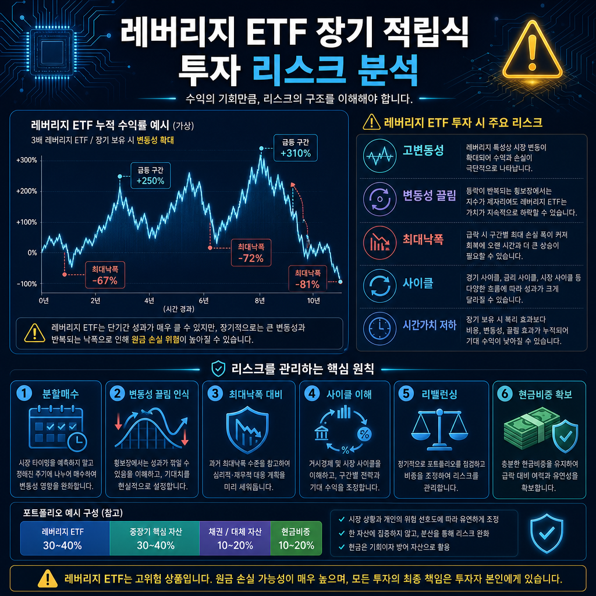

260502 SOXL 적립식 장기투자 분석 보고서

핵심 결론
- SOXL 적립식 장기투자는 “반도체 장기 성장”에 베팅하는 전략이지만, SOXL 자체는 장기보유용 핵심자산보다 고변동성 전술형 3배 레버리지 상품에 가깝다.
- 적립식 매수는 진입 시점 리스크를 낮출 수 있지만, 변동성 끌림·대규모 낙폭·장기 횡보장에서는 원금 회복이 매우 오래 걸릴 수 있다.
- 현실적인 접근은 전재산 몰빵이 아니라 포트폴리오 일부 비중, 리밸런싱, 손실 감내 한도, 현금 비중을 정한 규칙 기반 전략이다.
SOXL의 본질
SOXL은 반도체 섹터 지수의 일일 수익률을 3배로 추종하는 레버리지 ETF다. 핵심은 “장기적으로 3배 오른다”가 아니라 하루 단위 수익률을 3배로 맞추는 구조라는 점이다.
이 구조 때문에 상승장이 강하게 이어질 때는 폭발적인 성과가 나올 수 있지만, 급락과 반등이 반복되는 장에서는 기초지수가 제자리여도 SOXL은 크게 훼손될 수 있다.
적립식 투자의 장점
| 장점 | 설명 | 의미 |
|---|---|---|
| 진입 시점 분산 | 한 번에 고점 매수하는 위험을 줄임 | 변동성이 큰 자산에 심리적으로 유리 |
| 하락장 매수 | 가격이 빠질 때 더 많은 수량 확보 | 강한 반등장에서는 회복 탄력 가능 |
| 규칙 기반 투자 | 감정 매매를 줄임 | 공포·탐욕에 덜 흔들림 |
| 반도체 성장 노출 | AI, 데이터센터, 첨단 제조 사이클에 참여 | 장기 산업 성장에 베팅 가능 |
핵심 리스크
| 리스크 | 설명 | 왜 중요한가 |
|---|---|---|
| 변동성 끌림 | 일일 3배 구조 때문에 등락 반복 시 가치가 감소 | 장기 횡보장에서 치명적 |
| 최대낙폭 | 반도체 하락장에서는 70~90% 수준의 손실도 가능 | 멘탈과 현금흐름이 버티기 어려움 |
| 사이클 리스크 | 반도체는 경기·재고·CAPEX 사이클 영향이 큼 | 장기 성장 산업이어도 중기 급락 가능 |
| 금리와 유동성 | 고성장 기술주는 금리 상승에 취약 | 밸류에이션 압박 가능 |
| 상품 구조 | 장기 복리 3배 상품이 아님 | “반도체 장기투자”와 “SOXL 장기보유”는 다름 |
반대의견과 비판적 관점
SOXL 장기 적립식 투자에 대한 가장 강한 반대논리는 단순하다. 좋은 산업에 투자한다고 해서, 그 산업의 3배 레버리지 ETF가 장기투자에 적합한 것은 아니다.
반도체 산업은 장기적으로 성장 가능성이 크지만, 그 과정은 매우 거칠다. AI 수요가 강해도 재고 조정, 경기 침체, 금리 상승, 지정학 리스크, 특정 대형주 쏠림이 한꺼번에 오면 SOXL은 짧은 기간에 크게 무너질 수 있다.
또한 적립식이라는 말이 안전장치를 의미하지는 않는다. 계속 하락하는 구간에서는 평균단가를 낮추는 동시에 손실 규모도 계속 커질 수 있다.
실패 시나리오
| 시나리오 | 결과 |
|---|---|
| 고점부터 적립 시작 | 초기 낙폭이 커져 장기간 심리적 압박 발생 |
| 반도체 지수 장기 횡보 | 기초지수는 제자리인데 SOXL은 변동성 끌림으로 훼손 |
| 경기 침체 + 금리 상승 | 성장주 밸류에이션 압박과 수요 둔화가 동시에 발생 |
| 현금 없이 물타기 | 큰 하락장에서 추가 매수 여력이 사라짐 |
| 비중 과다 | 포트폴리오 전체가 SOXL 변동성에 끌려다님 |
현실적인 운용 원칙
| 원칙 | 기준 |
|---|---|
| 비중 제한 | 핵심자산이 아니라 위성자산으로 일부만 편입 |
| 리밸런싱 | 급등 시 일부 차익 실현, 급락 시 정해진 범위 안에서만 추가 |
| 현금 비중 | 큰 하락장에서 매수 여력을 남김 |
| 손실 한도 | 감당 가능한 최대 손실률을 먼저 정함 |
| 대체 선택지 | 장기 핵심 반도체 투자는 SOXX/SMH 등 1배 ETF와 비교 |
| 기간 인식 | 3년 이상 장기라도 중간 -70% 이상을 견딜 수 있는지 점검 |
관찰 지표
| 지표 | 봐야 하는 이유 |
|---|---|
| 필라델피아 반도체 지수 | SOXL의 기초 방향성 확인 |
| AI CAPEX | 데이터센터·GPU 투자 사이클의 지속성 판단 |
| 엔비디아·TSMC·ASML 실적 | 반도체 밸류체인의 핵심 건강도 확인 |
| 미국 금리 | 성장주와 레버리지 ETF 밸류에이션에 영향 |
| 반도체 재고 사이클 | 업황 둔화와 회복 시점 판단 |
| SOXL 거래량·괴리율 | 시장 스트레스와 상품 유동성 확인 |
최종 판단
SOXL 적립식 장기투자는 “반도체 산업은 장기 성장한다”는 관점만으로 접근하면 위험하다. 핵심 질문은 산업 전망이 아니라 내가 3배 레버리지의 폭락과 횡보 훼손을 견딜 수 있는가다.
공격적인 투자자에게 SOXL은 일부 비중으로 사용할 수 있는 고위험 도구지만, 장기 포트폴리오의 중심축으로 두기에는 구조적 리스크가 크다.
한 줄 결론: SOXL 적립식 투자는 반도체 성장에 대한 강한 확신과 높은 손실 감내력이 있을 때만 제한 비중으로 접근해야 하는 고위험·고변동성 전략이다.
Jeremy's Insight by 🤖 딸깍봇 https://blog.naver.com/jeremylee0213